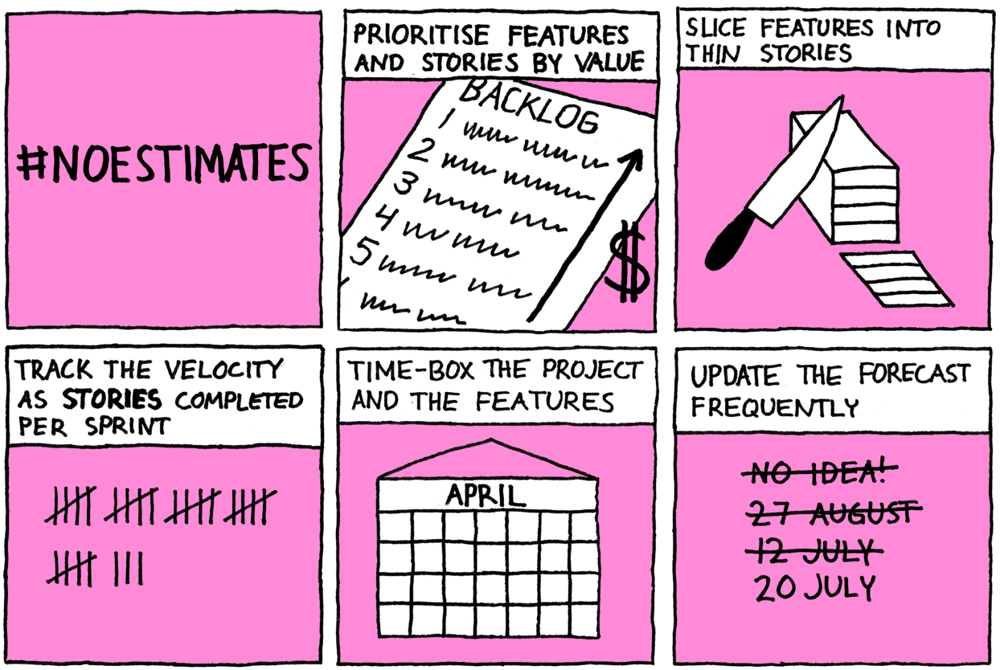

#noestimates is just story points done right

Estimation has long been a natural part of software development. Therefore, an approach like #noestimates, which gets rid of estimation can seem quite suspicious. After all, there are good reasons why we estimate. We need to know how long something will take so that we can decide whether it’s worth doing or how much the customer should be paying. We also want to know whether we are on track to deliver by our deadline, so we need to know how much work is left.
What is #noestimates
#noestimates is an idea aiming to avoid spending time on estimation when simpler methods can provide a similar or even better result. It’s not one specific method but rather a desire to find ways to make decisions and forecasts without estimation.
Some interpret this as simply going by gut feeling but the more accepted approach is to use empirical methods. One of the most prominent proponents for #noestimates is Vasco Duarte. I’ll be basing this article on the method described in his book No Estimates – How to measure project progress without estimates.
His method is very simple:
- Do some work
- Measure the progress
- Forecast, based on the rate of progress
If you’re using story points, you will recognise these steps from what you are already doing. However, compared to using story points, you will notice there is one step missing: estimation. No surprise there as it is a method under the umbrella of #noestimates!
Tracking velocity in a #noestimates world
The lack of story points might make you uncomfortable. After all, how do we measure velocity and make forecasts without them? The answer is simple: rather than measuring the velocity as the number of story points completed per sprint, measure it as the number of stories completed. Duarte calls this the story velocity.
Could this work?
Well, there are a few principles needed for it to work reliably.
- Slice the user stories thinly
- Time-box and prioritise
- Update the forecast frequently
Let’s look at each one of these in a bit more detail.
1. Slice the user stories thinly
Duarte recommends trying to make each user story no bigger than two days or, preferably, small enough to fit into half a day or a day’s development effort. The quickest way to know if a story is small enough, he suggests, is simply to ask, “Can you have this done by tomorrow?”.
This way, all stories will have roughly the same size, so no estimation will be necessary.
Also, we need to make sure that each story is independent and valuable on its own. This way, we can choose not to implement some stories without impacting the rest of the project.
One thing to note, however, is that breaking a feature into stories is a waste of time if we decide not to implement that feature or if we get feedback that significantly changes the feature. Rather than breaking down every feature at the start, Duarte uses a second velocity to forecast when features will be delivered: the feature velocity. This measures how many features we deliver per sprint.
2. Time-box and prioritise
As we have no estimates, we need a way to determine how much things will cost. Duarte suggests using time-boxes for both projects and features.
Time-box the project. Rather than estimating the cost, decide how much time we have available to spend. Order the features in the backlog by value. This way, if not all features can be completed, it will be the least valuable stories that are left out.
Time-box features. Don’t let any feature take longer than a month. Order the stories within features in priority order. If not all stories are completed, either throw the rest away or move them into a new feature and place it in the backlog based on how valuable it is. This way, the feature velocity will be more reliable and we are likely to be able to drop some low priority stories.
3. Update the forecast frequently
As #noestimates is a very lightweight way to produce forecasts, it is easy to do frequently. Every week or sprint we can predict when we are likely to be delivering certain features and what we’re likely to have delivered by the deadline.
This frequent forecasting enables us to manage scope along the way of the project. If we see we’re not on track, we can decide to get rid of low-value features or remove low-value stories from features.
Hang on, those are all good principles anyway!
The principles above hopefully don’t feel particularly controversial:
- Small stories is a good idea for many reasons. They will be easier to implement, create a better flow and enable more flexibility and quicker feedback.
- Prioritising features and stories based on value is hopefully a no-brainer by now.
- Time-box the project rather than fixing scope allows us to swap features and stories in or out as we learn more, while avoiding expensive death marches. Time-boxing features** gives us a checkpoint: should we keep adding more capabilities to this feature or is it more valuable to move on to the next one?
- Frequent forecasting and managing scope along the way is how we avoid unpleasant surprises and can make sure we make the decisions we need to, when we need to.
What’s the difference between story points and #noestimates?
While #noestimates is a big mind shift from the traditional upfront estimation in days and hours, it is not a huge change if we are already using story points. It’s rather the natural progression, as we strive to establish a flow of small stories. When every story is so small it is one or two story points big, what’s the point of story points?
Perhaps surprisingly to some, though, #noestimates doesn’t mean no estimates. There are a lot of assumptions that are very much like those we do when estimating:
- When breaking down big stories into small stories with the goal for them to be no more than a couple of days big, we’re effectively estimating how much effort each story requires. We may not use estimation cards and it may be quick but it is an estimate nevertheless.
- When using our feature velocity, we make assumptions about the size of features, namely that they will be roughly the same size as each other (using a time-box to make it more likely they are).
- When forecasting, we assume that the rate of progress will be consistent (perhaps within some interval with a maximum and a minimum value), which requires all things to remain equal. A lot of things affect the rate of progress. The most obvious one being adding or removing (or even swapping!) team members.
What #noestimates does, rather than eliminating the need for estimates, is to reduce the time spent on estimates.
So, which one is better?
I wouldn’t go as far as saying #noestimates is better. Story points work well for many teams and is an empirical method too. However, they are not without challenges.
Even with methods like planning poker, estimation using story points can be time-consuming. Discussions like “It’s a 3! No, it’s a 5!” can go on far too long if we let them.
It can also be very hard to fully separate the estimation of size and duration when using story points. Still, after 10 years using story points, I often catch myself thinking “this will take someone most of the sprint so it’s a 5”.
Last but not least, it is easy for story points to get inflated over time, by teams giving stories higher and higher estimates. There is even an incentive for doing so: the velocity will look higher!
With #noestimates, the way to game the story velocity is to create small stories so that we can ship more of them. This means delivering value quicker. That is certainly something I can live with!
♻️ I republished this blog post here 22 November 2019 with minimal changes. The date below is when it was originally published on my old blog.
Back to blog

This work by Magnus Dahlgren is licensed under a Creative Commons Attribution 4.0 International License.